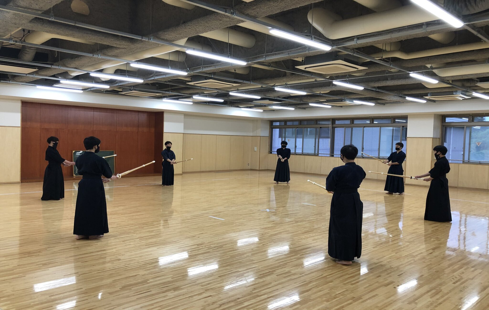

東北大学
剣道サークル
東北大学
剣道サークル

サークル紹介
東北大学公式の剣道サークルです。活動は基本自由のため、自分のペースで活動に参加することができます。初心者から高校までやっていた人まで幅広く、 練習はその日のメンバーで決めて厳しく行ったりゆるく行ったりしています。稽古は基本２時間で、準備運動をしてから基本打ちを行い、休憩をはさんでから地稽古をして終わります。 ちょうどよく汗をかくことができるため、運動不足の大学生にはちょうどよいと思います。程よく剣道がしたい方、是非見学に来てください！
お知らせ
- 2022/11/06
- 芋煮会を実施しました！！
- 2021/10/05
- 垂れネームを作りました～
- 2021/06/15
- 稽古に参加される方は面マスクを忘れずに！！
- 2020/10/29
- 飲食以外の新歓が可能になりました！
About us
We are an official Kendo club at Tohoku University. In this club, you can enjoy playing Kendo at your own pace since you can join the activity when you want to. We have various participants, ranging from those who have played Kendo since childhood to those who just started after university. The practice hours are usually around 2 hours, doing warm-ups, basic practice, and practice matches. If you need more exercise but are busy, I recommend you join us as we enjoy playing kendo but not so seriously. If you have any interest in our club, please visit us!
Information
- 2022/11/06
- We held "imonikai"!
- 2021/10/05
- We made hanging name.
- 2021/06/15
- If you're attending the practice, don't forget your mask!
- 2020/10/29
- Now you can have a new welcome that doesn't involve food and drink!